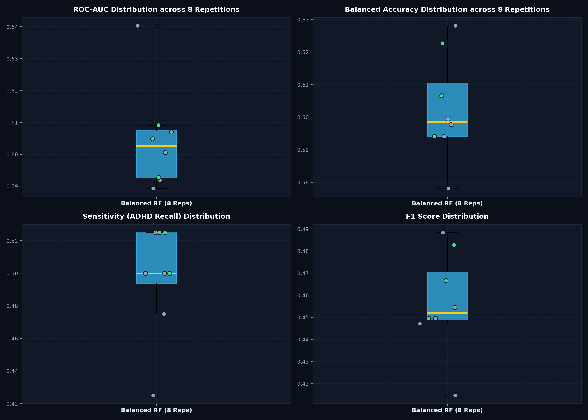

Run ID: run_20261004_183929_3more_rf_repeated | 8 Repeated 5-Fold Stratified CV Splits (Seeds: 42–49)
Development Cohort: 133 Subjects (7 Sites)
Test Cohort: 20 Subjects (Peking_2)
| Repetition | Seed | Group | ROC-AUC | PR-AUC | Accuracy | Balanced Acc | Sensitivity | Specificity | F1 Score | TP / TN / FP / FN |
|---|---|---|---|---|---|---|---|---|---|---|
| Rep 1 | 42 | Existing (42-46) | 0.5919 | 0.3522 | 0.6391 | 0.5995 | 0.5000 | 0.6989 | 0.4545 | 20 / 65 / 28 / 20 |
| Rep 2 | 43 | Existing (42-46) | 0.6070 | 0.3961 | 0.6316 | 0.5941 | 0.5000 | 0.6882 | 0.4494 | 20 / 64 / 29 / 20 |
| Rep 3 | 44 | Existing (42-46) | 0.6005 | 0.3704 | 0.6391 | 0.5781 | 0.4250 | 0.7312 | 0.4146 | 17 / 68 / 25 / 23 |
| Rep 4 | 45 | Existing (42-46) | 0.5892 | 0.3702 | 0.6692 | 0.6281 | 0.5250 | 0.7312 | 0.4884 | 21 / 68 / 25 / 19 |
| Rep 5 | 46 | Existing (42-46) | 0.6403 | 0.4187 | 0.6466 | 0.5977 | 0.4750 | 0.7204 | 0.4471 | 19 / 67 / 26 / 21 |
| Rep 6 | 47 | New (47-49) | 0.6091 | 0.3919 | 0.6391 | 0.6066 | 0.5250 | 0.6882 | 0.4667 | 21 / 64 / 29 / 19 |
| Rep 7 | 48 | New (47-49) | 0.5927 | 0.3941 | 0.6316 | 0.5941 | 0.5000 | 0.6882 | 0.4494 | 20 / 64 / 29 / 20 |
| Rep 8 | 49 | New (47-49) | 0.6048 | 0.3584 | 0.6617 | 0.6227 | 0.5250 | 0.7204 | 0.4828 | 21 / 67 / 26 / 19 |

| Model / Architecture | Protocol | ROC-AUC (Mean ± SD) | Balanced Accuracy | Sensitivity | F1 Score |
|---|---|---|---|---|---|
| Balanced Random Forest | 8-Rep Repeated CV (8 Seeds) | 0.6045 ± 0.0163 | 0.6026 ± 0.0163 | 0.4969 ± 0.0339 | 0.4566 ± 0.0232 |
| Balanced Random Forest | New 3-Rep CV (Seeds 47-49) | 0.6022 ± 0.0085 | 0.6078 ± 0.0144 | 0.5167 ± 0.0144 | 0.4663 ± 0.0167 |
| Soft Voting (0.6 RF / 0.4 XGB) | 5-Rep Repeated CV | 0.5926 ± 0.0229 | 0.5798 ± 0.0226 | 0.4500 ± 0.0354 | 0.4234 ± 0.0299 |
| Hard Voting (RF + XGBoost) | 5-Rep Repeated CV | 0.5926 ± 0.0229 | 0.5798 ± 0.0226 | 0.4500 ± 0.0354 | 0.4234 ± 0.0299 |
| Stacking (Balanced LogReg) | 5-Rep Repeated CV | 0.5555 ± 0.0280 | 0.5428 ± 0.0191 | 0.5050 ± 0.0485 | 0.4065 ± 0.0263 |
| Balanced Random Forest (Historical Ref) | Single NeuroIMAGE Partition | 0.7000 | 0.6833 | 0.7000 | 0.7000 |
Under the exact same repeated 5-fold cross-validation protocol, Balanced Random Forest achieves a mean ROC-AUC of 0.6045 ± 0.0163 and Balanced Accuracy of 0.6026 ± 0.0163 across 8 independent splits, outperforming Soft Voting (+0.0119), Hard Voting (+0.0119), and Stacking (+0.0490) with lower variance.